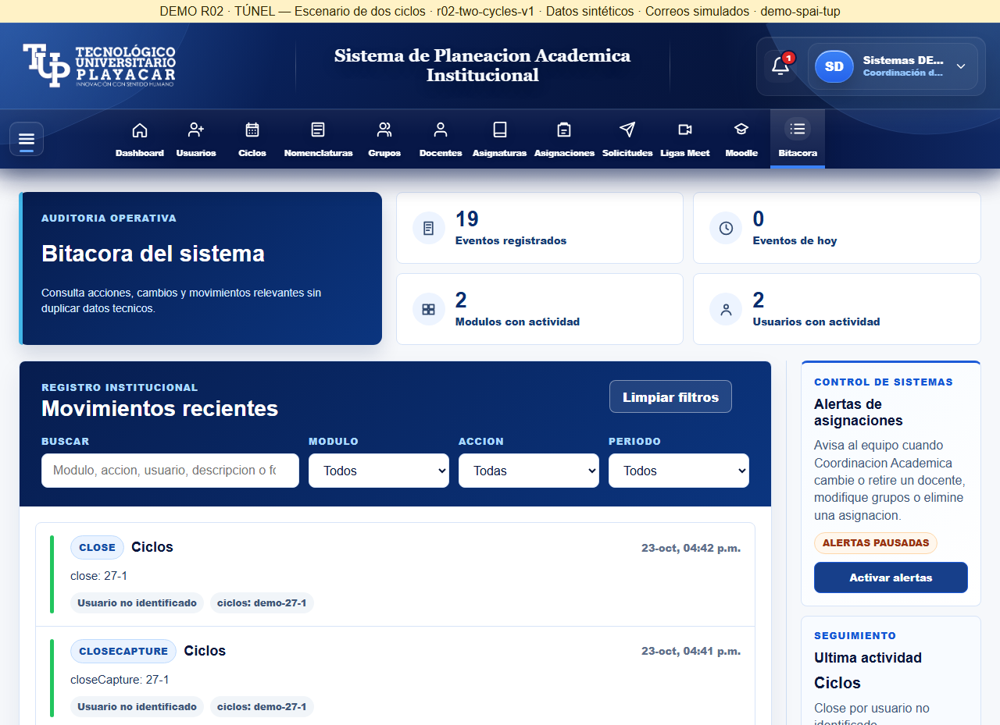
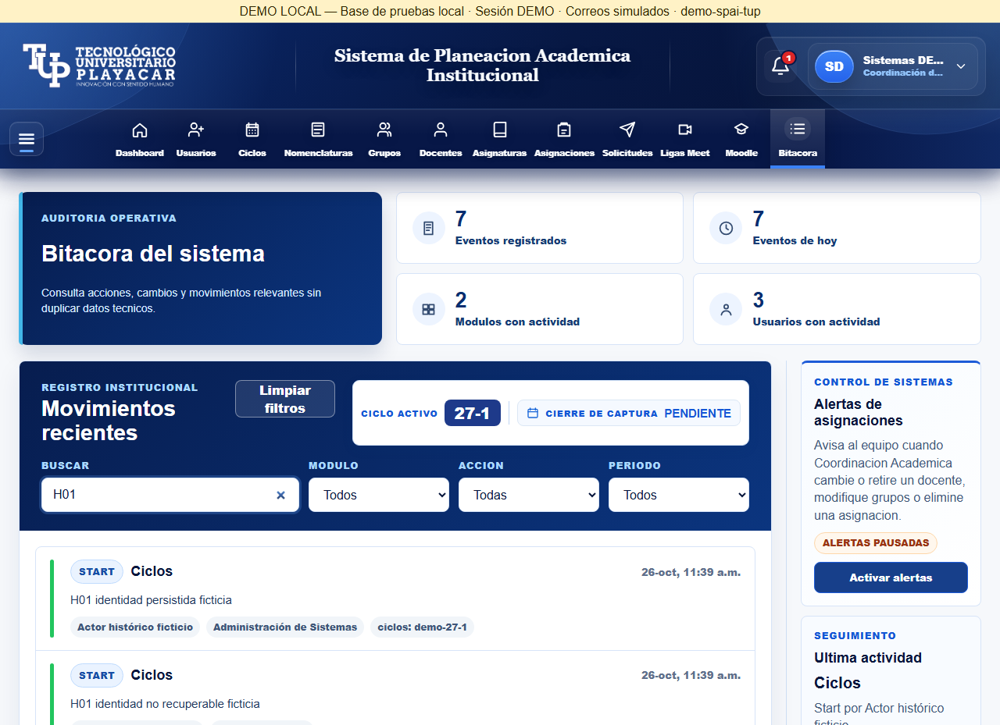
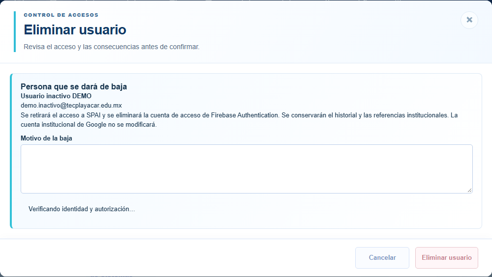
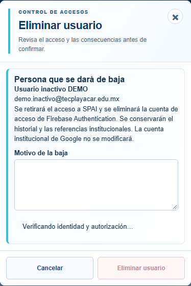
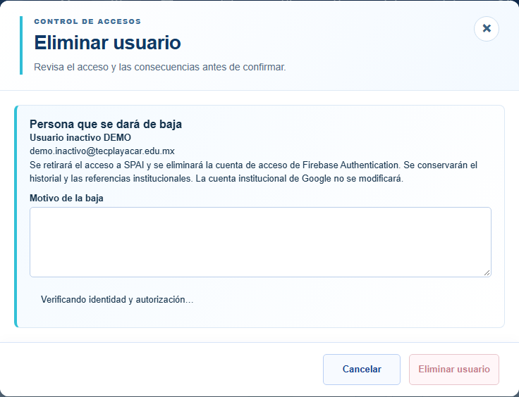
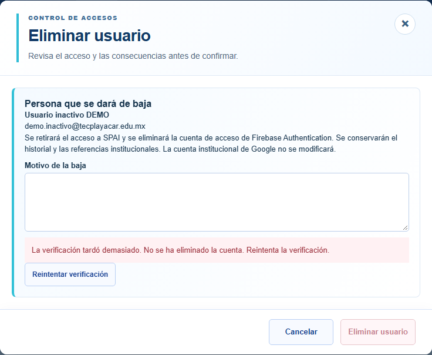
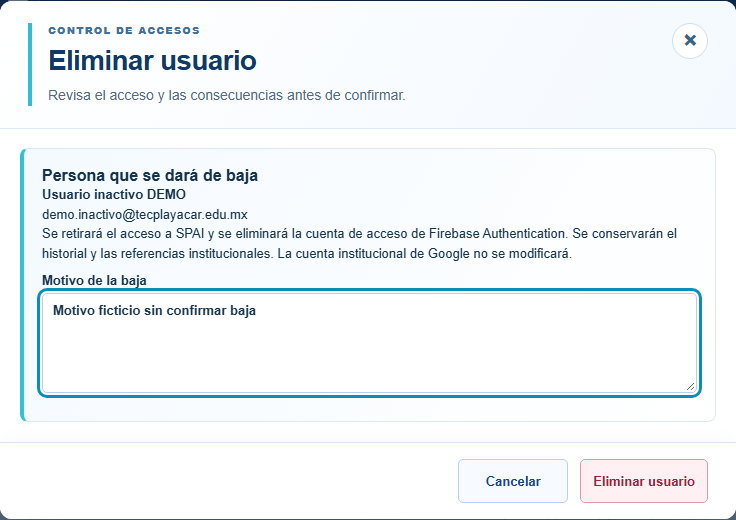

H-01 / H-02 — 26 octubre 2026
Datos ficticios. Inspección técnica de Codex; no aceptación del propietario. Código 7c475f7892cdeb50d21743b6c8b5426b93dd810b
Antes: identidad persistida no presentada

Resultado: identidad histórica recuperada, sin consulta al actor actual

Antes: demora deja Cancelar bloqueado

Resultado escritorio: cancelar mientras prepara
Resultado móvil 390 px

Resultado tableta 768 px

Plazo de 15 segundos y reintento

Reintento resuelto, tableta 768 px
